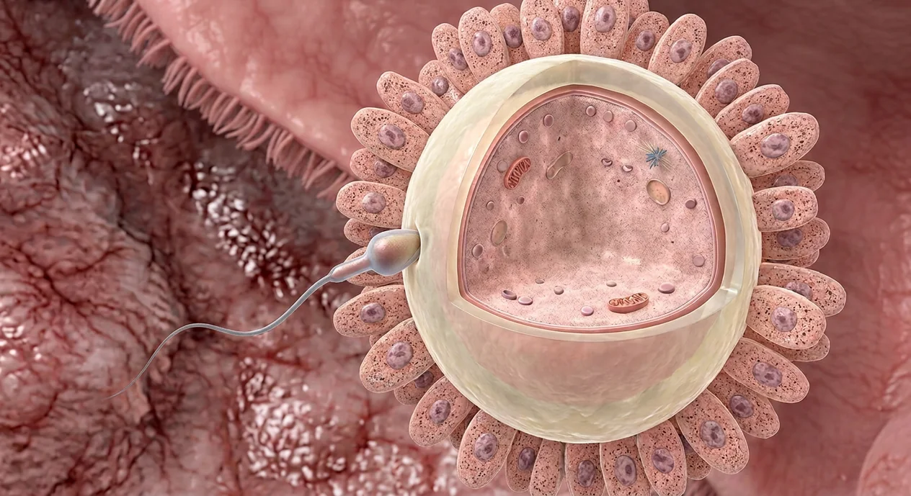

ORGAN → UNDER THE LENS
Membrane fusion and cortical response · conceptual
Tap to compare the organ region with a tissue-level teaching illustration.
Read about Passage through corona radiata ↓Trace the separate fertilization stage from sperm transit and capacitation through oocyte coats, membrane fusion, cortical reaction and a zygote.

Uterine tube ampullaTubal cilia and muscular movementPassage through corona radiataZona pellucida interactionAcrosomal reactionGamete membrane fusionCapacitated spermCortical reactionSecondary oocyteAfter intercourse, sperm travel through cervix and uterus toward a uterine tube; intercourse does not necessarily cause pregnancy. Fertilization normally occurs in the ampulla of the uterine tube, where a capacitated sperm contacts the secondary oocyte surrounded by corona radiata and zona pellucida. Acrosome-mediated events facilitate passage through the coat, followed by sperm–oocyte membrane fusion. The oocyte completes meiosis II, cortical changes reduce polyspermy, and maternal and paternal pronuclear material ultimately establishes a diploid zygote. The plate deliberately shows the earlier contact step only: it does not show pronuclei, embryo formation or a fertilization event inside the uterus.
These are educational cutaways, not literal magnifications of an organ pixel or laboratory slides. A ring marks the approximate tissue region; part-specific lines appear only where identifiable.
Tap to compare the organ region with a tissue-level teaching illustration.
Read about Passage through corona radiata ↓Sperm and egg are separate branches before fertilization. Obstetric gestational weeks are usually counted from the last menstrual period, roughly two weeks before conception. Digital labor-stage illustrations model separate moments, not clinical birth photographs or patient measurements.
Tap an image to enlarge and tap again to close. These are digital educational models, not microscope photos, measured ultrasounds, clinical birth images or exact developmental clocks.
The digital sperm–oocyte contact plate does not show gamete fusion.
Separate digital microscopic-scale illustration of postfusion oocyte activation; not a microscope photo or literal zoom of the first image.
These 9 structures describe anatomy related to the chapter’s regional illustration. Each entry separates location, function and a clinical point.
Distal wider segment of uterine tube near ovary is the most common site of normal sperm–oocyte encounter.
What it doesProvides site for fertilization and early conceptus transit.
Clinical connectionTubal implantation is ectopic and needs medical assessment.
Picture context The digital sperm–oocyte contact plate does not show gamete fusion.
Ovulated secondary oocyte is surrounded by a zona pellucida and corona radiata.
What it doesSupplies maternal haploid material when fertilization succeeds.
Clinical connectionIt is arrested in meiosis II until sperm entry.
Picture context The digital sperm–oocyte contact plate does not show gamete fusion.
Tract conditions modify sperm membrane and movement after ejaculation.
What it doesEnables effective interaction with oocyte investments.
Clinical connectionA mature-looking tail on a drawing does not prove capacitation.
Picture context The digital sperm–oocyte contact plate does not show gamete fusion.
Sperm traverse the surrounding granulosa-derived corona radiata before reaching the zona.
What it doesBrings sperm to extracellular zona coat.
Clinical connectionOnly an illustrative contact location is shown on this plate.
Picture context Separate digital microscopic-scale illustration of postfusion oocyte activation; not a microscope photo or literal zoom of the first image.
Sperm contact oocyte extracellular zona layer and undergo molecular interactions required for entry.
What it doesPrecedes membrane fusion.
Clinical connectionA sperm touching the zona in an image is not proof fertilization occurred.
Picture context Separate digital microscopic-scale illustration of postfusion oocyte activation; not a microscope photo or literal zoom of the first image.
Membrane and enzyme release from the sperm head facilitates passage through zona pellucida.
What it doesHelps sperm reach oocyte plasma membrane.
Clinical connectionThis molecular event cannot be identified on the large digital plate.
Picture context The digital sperm–oocyte contact plate does not show gamete fusion.
Sperm and oocyte plasma membranes fuse after passage through outer coats.
What it doesIntroduces paternal genetic material into oocyte.
Clinical connectionThis stage is later than the single sperm–zona contact depicted.
Picture context Separate digital microscopic-scale illustration of postfusion oocyte activation; not a microscope photo or literal zoom of the first image.
Oocyte cortical granules alter surrounding coat following sperm fusion.
What it doesHelps limit polyspermy.
Clinical connectionDo not represent this process as a visible colored ring on the static contact image.
Picture context Separate digital microscopic-scale illustration of postfusion oocyte activation; not a microscope photo or literal zoom of the first image.
Epithelial cilia and tubal muscle activity help move gametes and early conceptus toward uterus.
What it doesConnects tubal fertilization to uterine implantation.
Clinical connectionThe contact illustration cannot measure tubal transport.
Picture context The digital sperm–oocyte contact plate does not show gamete fusion.
These 11 anatomy and development entries explain each stage without placing false pointers on an illustrative context plate.
Semen is commonly deposited in vagina with sperm entering cervical mucus under favorable conditions.
What it doesBegins sperm transit toward uterine tubes.
Clinical connectionIntercourse timing, contraception and fertility vary; no pregnancy is guaranteed.
Picture context A related regional anatomy model; the individual event or cell is not separately identifiable in this picture.
Cervical secretion varies across cycle and affects sperm passage toward uterus.
What it doesActs as a changing selective gateway.
Clinical connectionA cervical photograph alone cannot determine conception.
Picture context A related regional anatomy model; the individual event or cell is not separately identifiable in this picture.
Sperm passing cervix cross uterine cavity en route to a tube.
What it doesConnects lower reproductive tract to usual fertilization site.
Clinical connectionThe uterus is not the typical site of normal fertilization.
Picture context A related regional anatomy model; the individual event or cell is not separately identifiable in this picture.
Sperm entry stimulates the secondary oocyte to complete the second meiotic division.
What it doesGenerates mature maternal haploid contribution and a polar body.
Clinical connectionIt does not finish during ordinary ovulation without fertilization.
Picture context Separate digital microscopic-scale illustration of postfusion oocyte activation; not a microscope photo or literal zoom of the first image.
Haploid maternal nuclear material reorganizes following meiosis II.
What it doesParticipates in establishing the zygote genome.
Clinical connectionThe earlier contact plate does not depict pronuclei. The nearby postfusion plate does not resolve an individual pronucleus.
Picture context Separate digital microscopic-scale illustration of postfusion oocyte activation; not a microscope photo or literal zoom of the first image.
Sperm chromatin decondenses to form paternal pronuclear material.
What it doesContributes the paternal chromosome set.
Clinical connectionA sperm head outside the zona is not yet a paternal pronucleus. The nearby postfusion plate does not resolve an individual pronucleus.
Picture context Separate digital microscopic-scale illustration of postfusion oocyte activation; not a microscope photo or literal zoom of the first image.
New single-celled conceptus arises after union of maternal and paternal genetic material.
What it doesBegins the cellular development of an individual conceptus.
Clinical connectionA zygote must still divide, reach uterus and implant for an ongoing pregnancy.
Picture context A related regional anatomy model; the individual event or cell is not separately identifiable in this picture.
Dizygotic twins arise from two oocytes fertilized separately; monozygotic twins arise from one early conceptus that divides.
What it doesClarifies different routes to twin pregnancy.
Clinical connectionThe single-oocyte plate does not depict twins.
Picture context A related regional anatomy model; the individual event or cell is not separately identifiable in this picture.
Fertilization in a tube is normal; implantation within a tube is not.
What it doesSeparates normal fertilization location from abnormal implantation site.
Clinical connectionSevere pain or bleeding in a possible pregnancy requires urgent clinical evaluation.
Picture context A related regional anatomy model; the individual event or cell is not separately identifiable in this picture.
Fertilization age counts from conception; obstetric gestational age usually counts from last menstrual period, roughly two weeks earlier.
What it doesPrevents misreading embryo and fetal weeks.
Clinical connectionOvulation timing differs, so the two-week offset is an approximation.
Picture context The digital sperm–oocyte contact plate does not show gamete fusion.
Sperm survival, ovulation, tubal transport and many biological factors affect the chance of fertilization.
What it doesSets realistic expectations for the sequential study path.
Clinical connectionA diagram cannot diagnose the cause of infertility.
Picture context The digital sperm–oocyte contact plate does not show gamete fusion.
Short answers grounded in the structures described above. Use the illustrated guide for anatomical context.
It usually occurs in the ampulla of a uterine tube near the ovary. The sperm and secondary oocyte meet there; normal later implantation is in the uterine endometrium, not inside the tube.
No. Sperm transit, ovulation, timing, gamete function and other conditions affect whether fertilization occurs. Even after fertilization, development and uterine implantation are separate requirements for an ongoing pregnancy.
After appropriate sperm–oocyte coat interaction, acrosomal membrane changes help sperm cross the zona pellucida. The contact plate shows an earlier sperm at the outer zona, not the reaction at molecular resolution.
After one sperm fuses with the oocyte, cortical-granule changes modify the surrounding zona and help block polyspermy. This is a biological reaction, not a visible colored ring in the image.
Fertilization combines gamete genetic material into a zygote, usually in a uterine tube. Implantation happens later when a developing blastocyst attaches to receptive uterine lining.
Follow these connected structures and body systems in the illustrated atlas.
 Egg cell · oocyte & ovulationA separate egg chapter: primary versus secondary oocyte, meiosis, zona pellucida, corona radiata and ovulation.↗
Egg cell · oocyte & ovulationA separate egg chapter: primary versus secondary oocyte, meiosis, zona pellucida, corona radiata and ovulation.↗ Zygote to blastocyst · early divisionsTrace the separate preimplantation chapter: zygote, cleavage, morula, blastocoel and hatching.↗
Zygote to blastocyst · early divisionsTrace the separate preimplantation chapter: zygote, cleavage, morula, blastocoel and hatching.↗ Uterus — layers & cavityThe womb in cross-section: endometrium, junctional zone, myometrium, cavity, isthmus and the key clinical boundaries.↗
Uterus — layers & cavityThe womb in cross-section: endometrium, junctional zone, myometrium, cavity, isthmus and the key clinical boundaries.↗ Female pelvis & perineumThe female pelvic floor in sagittal section: bladder and urethra, vagina and anteverted uterus, rectum behind — plus the ligaments and pouches that position them.↗
Female pelvis & perineumThe female pelvic floor in sagittal section: bladder and urethra, vagina and anteverted uterus, rectum behind — plus the ligaments and pouches that position them.↗General anatomy references and related source chapters for continued study. These links do not make the digital illustrations clinical images or certify every anatomical variant.
This educational page is not medical advice and has not undergone formal clinical peer review. Spotted an error? Contact the editor.
Open the regional digital plate, study entries and a short self-test. Visible markers occur only for identifiable sperm and oocyte structures.